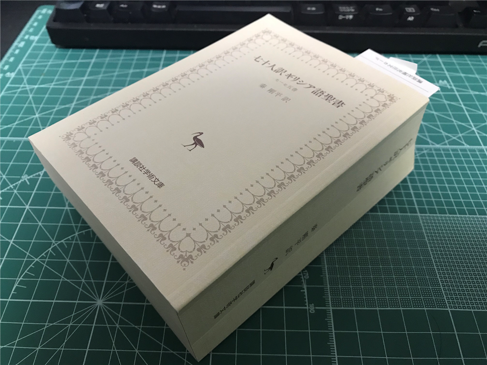
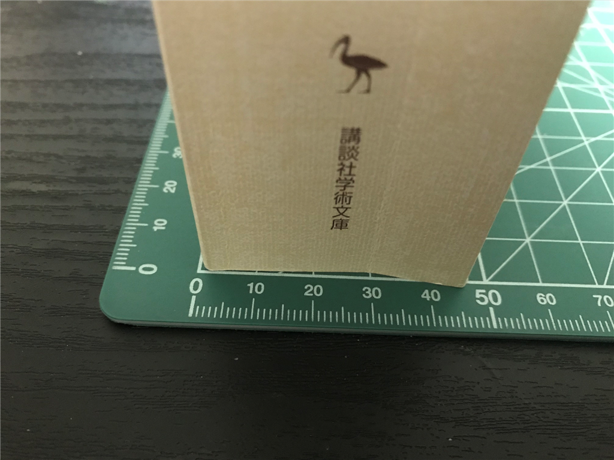
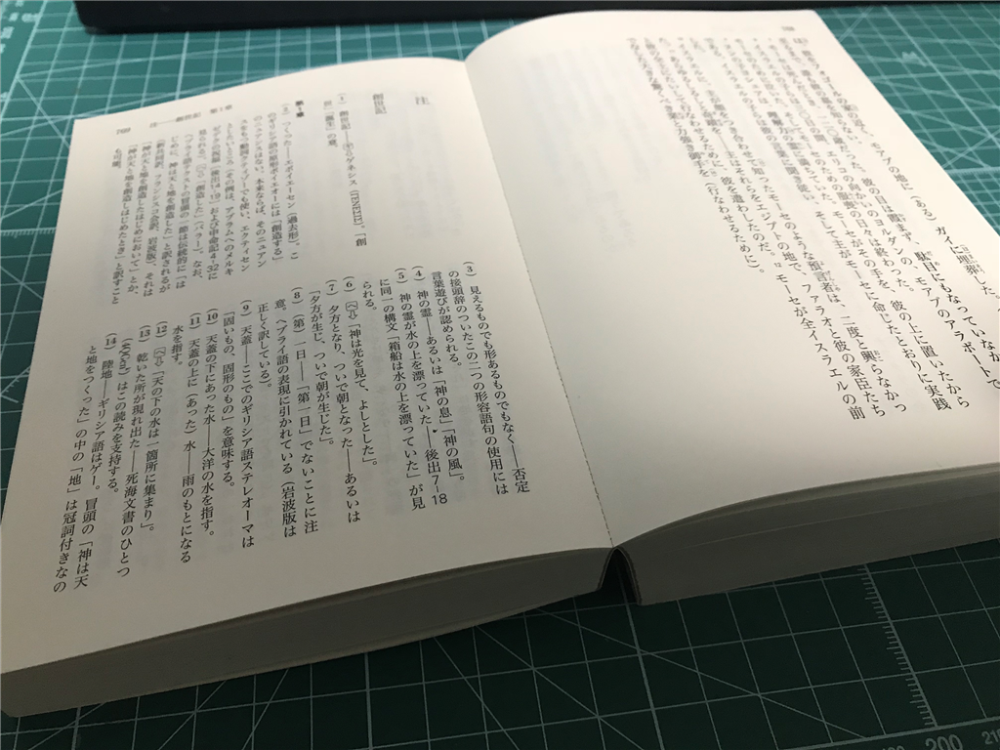
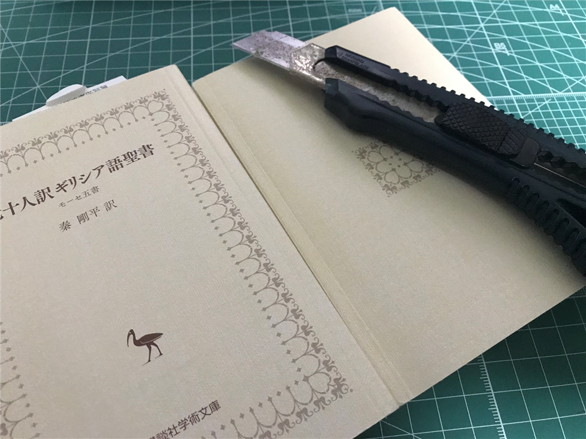
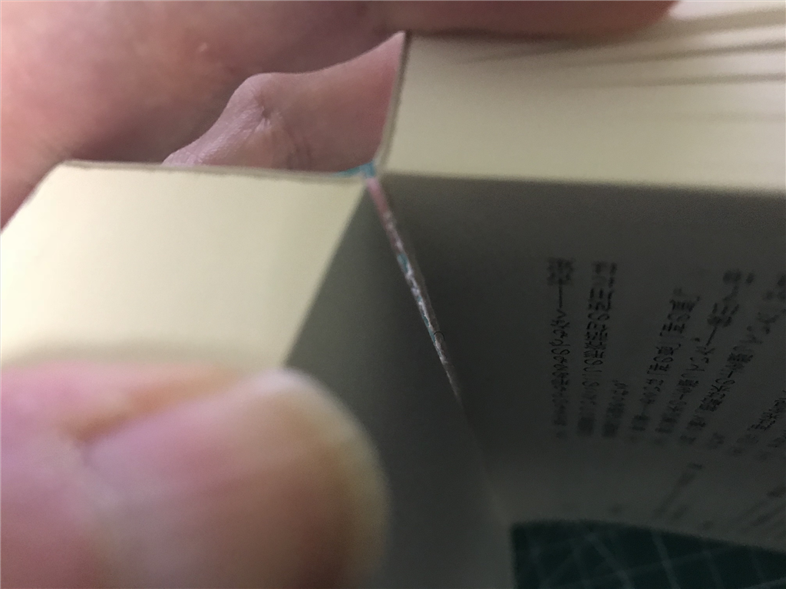
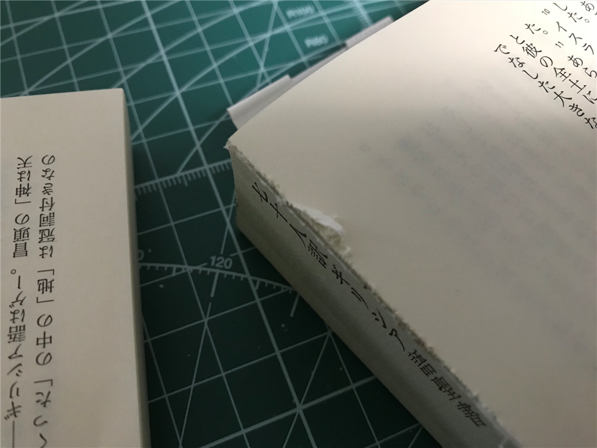
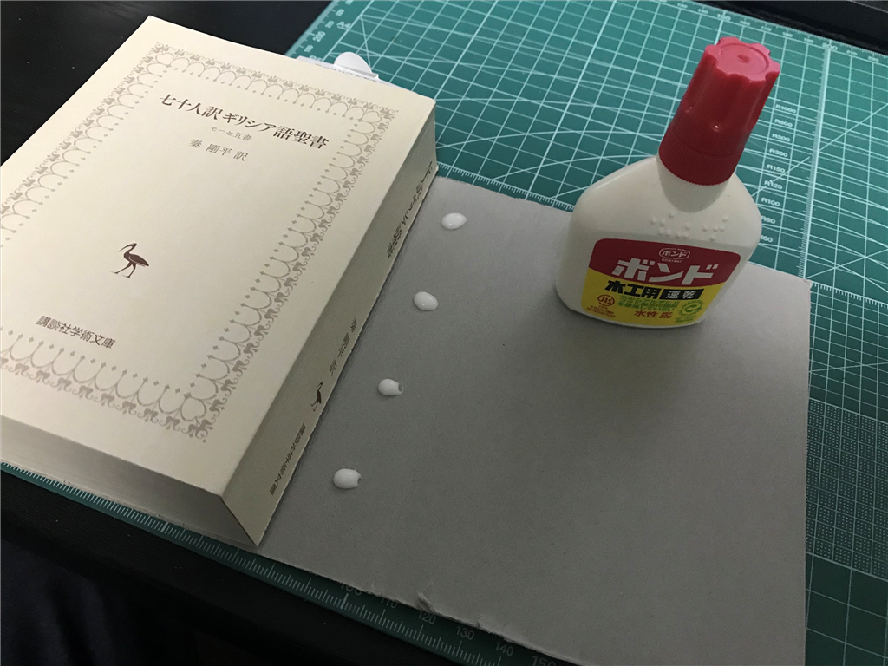
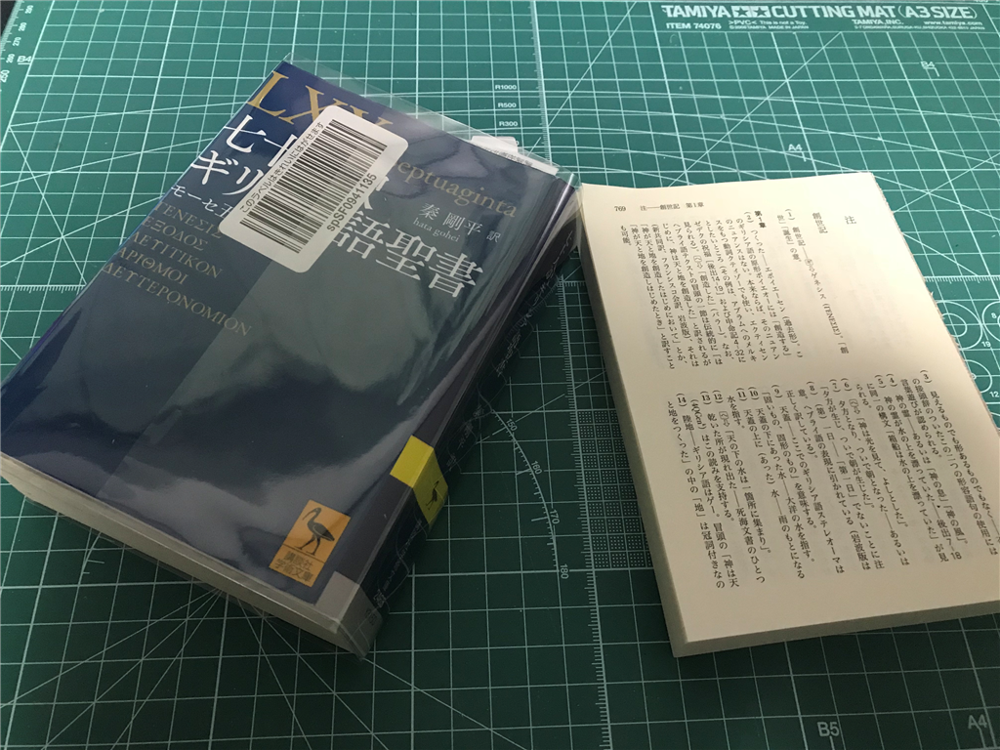
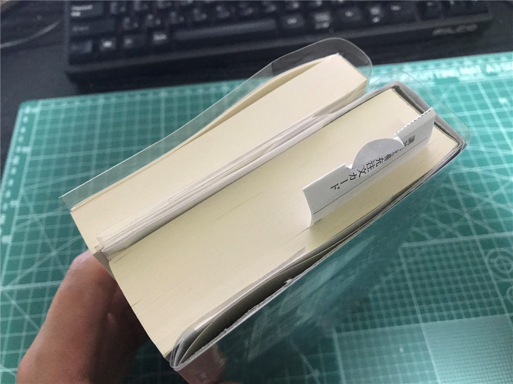

11月7日：文庫本が分厚すぎて気軽に読めないので2つに分割した
公開日：

最近また睡眠サイクルがおかしくて（← 多分運動不足）、夕方に寝て夜中の2時に目が覚めたりしている。そんなときは本を読むのだけど、1冊だけ、興味がないことはないのに全然読み進められない文庫本がある。
")
- 作者: 秦剛平
- 出版社/メーカー: 講談社
- 発売日: 2017/11/11
- メディア: 文庫
- この商品を含むブログ (1件) を見る
分厚すぎるねん、京極夏彦かよ。買って結構経つのに、まだ創世記の34章までしか読んでないよ。

試しに測ってみると、厚さが 4.5cm ぐらいある。そのうち後ろ 1/3 は脚注になっているのだが、本文と行ったり来たりもめんどくさかった。――というわけで、バラしてみようと思う。3,000 円以上するのでちょっともったいない気がするけど、実はこの本はハードカバーでも持っている（5冊組なのだけど、何冊か欠けている状態で放置してたら、合本版の文庫が出た）。本を傷つけるのはあまり好みではなく、いわゆる「自炊」と呼ばれる行為にも手を出したことはないんだが、今回は「ま、いっか」って感じ。大事なのは本そのものではなく、それを読む体験なのだよ、読まれなかったら意味がないんだよと自分に言い聞かせる。
折り目を付ける

なにぶん初めてなもので右も左もわからないんだが、まず切断したい部分を思い切って開き、本を割る。何回も開閉して、背表紙に折り目が、ページの間のノリが見えるまでクセを付ける。
カッターをいれる

次に、ページを切断する。先ほど付けた折り目を、キレないカッターナイフで何度もなぞって、少しずつ、少しずつ。ちなみに、うちのカッターナイフが切れないのは土方仕事で使ってたやつだからだ。刃はなまくらだし、サビまくってるけど、うちの家にはこれしかない（

そんなカッターナイフでも、丹念に表から、裏からと刃を這わせていると、次第に本が2つの部分に割れてきた。

そこまではうまくできてたのに、自分はちょっとゴールを焦って、本文の方に少し刃を入れてしまった。最後まで平常心で、集中を切らさずに取り組むのは大事だね（吐血
表紙をつける
さて、このまま読んでも一向にかまわないのだけど、さすがに表紙がないと最後のページが傷んでしまいそうだ。そこで、あまってた厚紙の封筒（レターパックみたいなやつ）をバラしてカッターナイフで切断し、簡単な表紙を作った。

それを木工用ボンドでくっつけて完成。世の中には製本カバーという便利なものもあるらしいけど、Amazon でパラパラ調べてみたところ A4 のものしかない。文庫本ってだいたい A6 かな？ それ用もあればいいんだけど、まぁ、普通カバーとテープで製本するって言ったらプリンターで出力した論文や資料を～っていう需要ばかりで、「文庫本作っちゃうぞ！」みたいなおじさんはまれなのだと思う。

ともあれ、これで完成。だいぶ雑だけど、講談社学術文庫のカバーは割と丈夫なので、上からかぶせてしまえばそんなに悪い感じには見えない。ちなみに、索引の方は家から持ち出さないことにして、カバーは付けない。面倒くさいしね。

これでバリバリ読み進められる……ハズ。